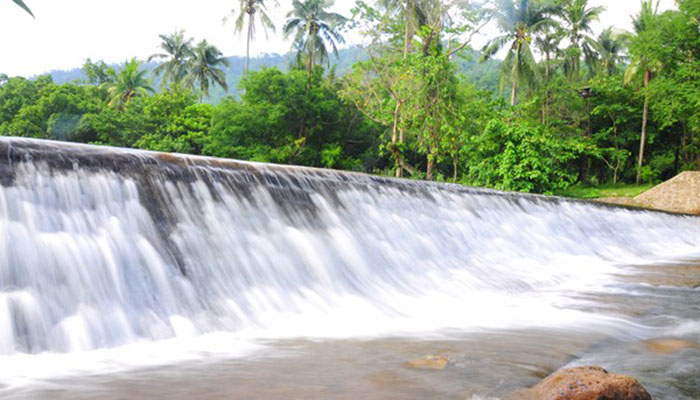

อุทยานวังตะไคร้ อยู่ในอำเภอเมือง เป็นสถานที่พักผ่อน อยู่ในความดูแลของมูลนิธิจุมภฏ - พันธุ์ทิพย์ บริพัตร ภายในตกแต่งด้วยดอกไม้นานาพันธุ์ และไม้ประดับต่างๆ ภายในเนื้อที่ 1,400 ไร่ มีธารน้ำที่ไหลมาจากซอกซอน ผ่านโขดหินน้อยใหญ่ เหมาะในการเล่นน้ำ ซึ่งเกิดจากการรวมตัวของลำธาร 2 ลำธารลำธารหนึ่งชื่อคลองมะเดื่อจากน้ำตกเหวกระถินกับอีกลำธารหนึ่งชื่อคลองตะเคียน จากน้ำตกแม่ปล้อง ลำธารทั้ง 2 นี้ ไหลมาบรรจบกันเป็นธารเดียว มีแอ่งน้ำขัง เป็นวังน้ำอยู่เป็นตอน ๆ ไหลลงสู่แม่น้ำนครนายกและมีต้นตะไคร้ น้ำตะไคร้หางนาค นับเป็นพันธุ์ไม้น้ำที่ชอบขึ้นอยู่ตามห้วยลำธารทั่วไป เป็นต้นไม้ที่ เหนียวมากมีก้านสีดำและมีดอกสีชมพูน่ารักมาก ภายในอุทยานแห่งนี้จะออกดอกสะพรั่งตัดกับ ท้องฟ้าสีน้ำเงิน ทำให้เกิดทัศนียภาพงดงาม ทุกฤดูกาลโดยเฉพาะในฤดูฝน และเนื่องจากวังตะไคร้นี้เป็นด้านที่รับลมมรสุมตะวันตกเฉียงใต้ระหว่างเดือนกรกฎาคมถึงเดือนตุลาคม จึงทำให้มีฝนตกชุก หุบเขา บริเวณนี้จึงมีพรรณไม้ใหญ่น้อยมากมาย ลำธารน้ำจะมีน้ำเต็มฝั่งไหลเชี่ยวจัด จึงเป็นที่เล่นกีฬาล่องแก่งด้วยแพยาง หรือชูชีพ

ค่าผ่านประตู
- นักท่องเที่ยวเดินเท้าคนละ 10 บาท
- รถทุกประเภท คันละ 150 บาท (ผู้โดยสารเกิน 8 คน คิดเพิ่มคนละ 10 บาท)
- สำหรับรถมอเตอร์ไซด์ ต้องจอดไว้บริเวณด้านหน้าทางเข้า ชำระค่าจอดรถ 10 บาท และค่าผ่านประตูเข้าวังตะไคร้ คนละ 10 บาท
เดินทางโดยรถส่วนตัว
จากห้างฟิวเจอร์ปารค์ รังสิต ใช้ทางหลวงหมายเลข 305 ( รังสิต - องครักษ์ - นครนายก ) มุ่งหน้าสู่จังหวัดนครนายก ระยะทางประมาณ 76 กิโลเมตร ก็จะถึงตัวเมืองนครนายก
จากห้างฟิวเจอร์ รังสิต ใช้ทางหลวงหมายเลข 1 ( พหลโยธิน ) มุ่งหน้าสู่จังหวัดสระบุรี ประมาณ 60 กิโลเมตร ให้เข้าเลนซ้ายเพื่อไป นครนายก เมื่อเข้าเลนซ้ายแล้วขับตรงไปอีกจะพบป้ายบอกทางให้เลี้ยวซ้ายเพื่อขึ้นสะพานวนเข้าสู่ถนนหมายเลข 33 มุ่งหน้าสู่นครนายก หลังจากลงสะพานแล้วขับตรงไป ประมาณ 46 กิโลเมตร ก็จะถึงตัวเมืองนครนายก
จากตัวเมืองนครนายก ท่านจะเห็นป้าย เขียนว่า น้ำตกสาริกา น้ำตกนางรอง ให้ขับตรงไปตามเส้นทางนั้น ( ถนนหมายเลข 3049 ) ( ถ้าท่านเลี้ยวขวาจะไปจังหวัดปราจีนบุรี ถนนหมายเลข 33 ) จากนั้นขับตรงไปตามถนนหมายเลข 3049 ประมาณ 11 กิโลเมตร จากนั้น เลี้ยวขวา แล้วขับตรงไป ประมาณ 5 กิโลเมตร ก็จะถึงวังตะไคร้ ( วังตะไคร้กับน้ำตกนางรอง ใช้เส้นทางเดียวกันโดยวังตะไคร้จะถึง ก่อนน้ำตกนางรอง โดยวังตะไคร้จะอยู่ทางด้านซ้ายมือของท่าน )
เดินทางโดยรถสาธารณะ
มีรถตู้จากอนสาวรีย์ชัย ให้ขึ้นรถตู้ กรุงเทพ – เขื่อนขุนด่าน จากรังสิตให้ขึ้นรถตู้สายองครักษ์ - เขื่อนขุนด่านที่ใต้สะพานฟิวเจอร์รังสิต รถจะผ่านนำตกวังตะไคร้ อุทยานพระพิฆเนศ วัดหลวงพ่อปากแดง และสิ้นสุดที่หน้าเขื่อนขุนด่าน บอกให้รถไปส่งที่วัด และให้ขอเบอร์โทร เวลากลับหรือจะนั่งรถไปต่อที่เขื่อนขุนด่านก็ให้โทรแจ้ง